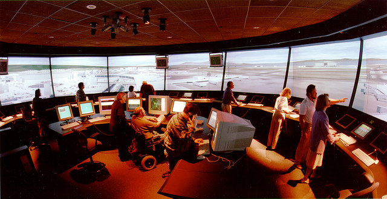

Sections
SectionsStudents Voice Concerns Over Political Correctness of Space-Themed Social Gathering
By Dr. Nasty LHS administration plans next controversy.
It's Friday night, you've just finished a grueling week of homework and studying and college apps, so you want to unwind and trip the night fantastic with a couple o' bros at a swinging school sanctioned sock hop. At the door, the student council checks your ticket. A teacher then asks to check your pockets. Finally, you get to check in for the night of your life. But did you remember to check your privilege?
"Just because we don't know who or what exists beyond the reaches of the known universe, does not mean we can just ignore the feelings of whatever is out there," proclaimed one student. "The fact of the matter is, these events need to be inclusive to everyone, and a theme like "space" implies only those who exist within the realm of confirmed existence can feel like they belong." Opinions like this one were not uncommon amongst dance-goers. Phrases such as "universe-centric", "infini-phobia" and "single dimensional being-washing" were frequently referenced within our interviews. "It's honestly appalling that they even let this event take place," responded one student. When asked why they then chose to even attend if they felt so strongly about it, they declined further comment.
All in all, the Space dance was a successful function, with Juniors and Seniors alike being able to forget about their woes for a few short hours before returning home, letting out a huge sigh, and beginning their homework due for Monday. But students shall not soon forget the social injustice committed that evening. That kind of shame stays stuck in the head far longer than the chorus of "Watch Me." A young dance participant summed up the sentiments of the evening flawlessly: "I personally did not feel excluded or offended, but I am sure someone did. And that is inexcusable."